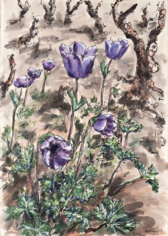

Archivio Dagmar Davidson
Pittrice e poetessa · Örebro – Campi Salentina
Home
Scritti
Opere d'arte
Botanica
Media e memorie
Tutto l'archivio
La vita di Dagmar Davidson
Tutto l'archivio
› Tag
Pianta - Anemone Coronaria: 4 opere
Torna a tutto l'archivio
Altri tag
autobiografia
2
autoritratto
1
Campi Salentina
6
famiglia
2
Lecce
2
Mostra - Elicona 1971
1
Mostra - Harvard 1993
2
Mostra - Maccagnani 1964
2
Pianta - Anemone Coronaria
4
Pianta - Bellis Perennis
3
Pianta - Reseda
3
Pianta - Silene Conica
3
Primavera del Salento
16
Svezia
3
Anemoli - bozza di stampa Italiano Svedese
Scritti › Poesia
Primavera del Salento
Pianta - Anemone Coronaria
Anemoli
Scritti › Poesia
Primavera del Salento
Pianta - Anemone Coronaria

Flowers_003_05
Opere d'arte › Pittura · acquerello
Primavera del Salento
Pianta - Anemone Coronaria
Flowers_003_06
Botanica › Erbario disegnato
Primavera del Salento
Pianta - Anemone Coronaria